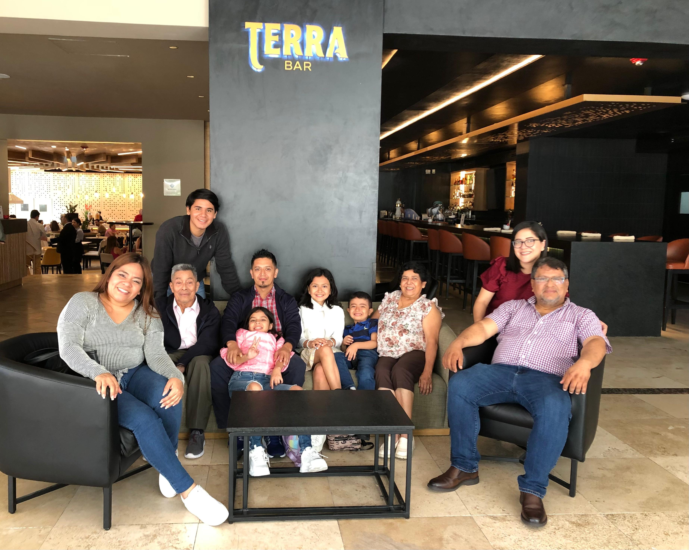
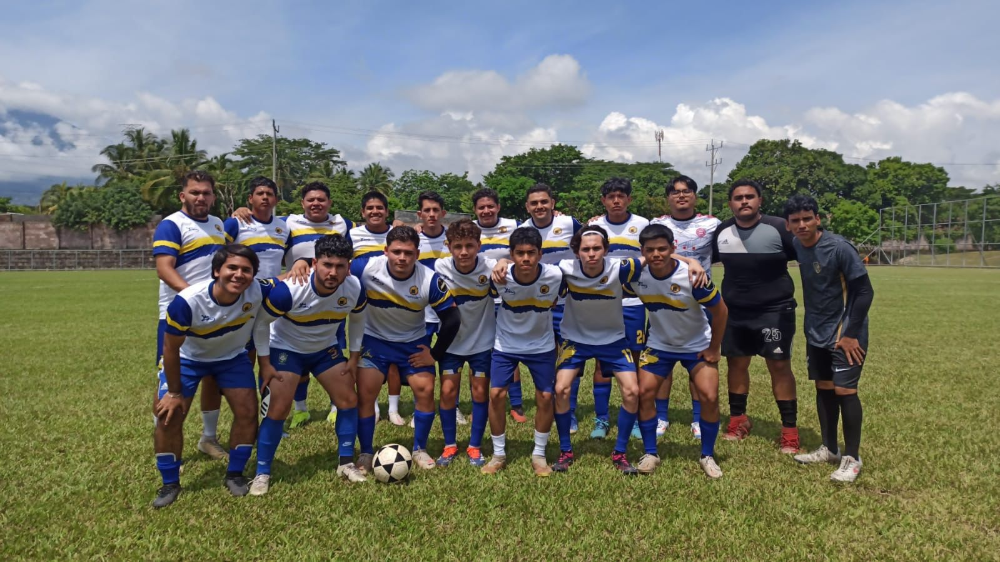
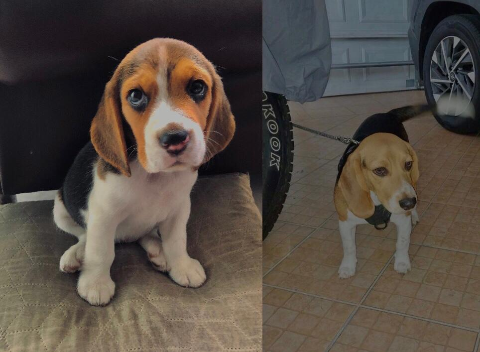

Cosas que son importantes para mí
Mi Familia
La familia es algo esencial para mí. Siempre han sido mi mayor apoyo y son los que están ahí en las buenas y en las malas. Me gusta pasar tiempo con ellos, ya sea en reuniones familiares, viajes, cumpleaños y fin de año. Cada uno tiene su personalidad, y eso hace que siempre haya risas. Los consejos de mis abuelos y uno que otro regaño, pero al final, es lo que hace especial estar juntos. Mi familia es lo que me mantiene con los pies en la tierra y con ganas de ser una mejor persona cada día.

El Fútbol
Desde pequeño me encantó el fútbol; lo veo siempre al igual que lo practico, y obviamente soy fiel madridista. El fútbol siempre fue un sueño que quise lograr desde pequeño, pero tanto por indisciplina como por no tener el suficiente apoyo de mis padres en este sentido por la realidad de los equipos salvadoreños, realmente me rendí, pero fue una experiencia bonita. A mis 14 años entré a Alianza Sub-15, y estando allí fui llamado a un campamento de Selección Nacional Sub-15. Después dejé de jugar porque vino la pandemia y mi estado físico no fue el mejor, y ahí terminó. Los que estaban se esforzaron y eran mucho mejores. Luego estuve recientemente en una academia llamada College Cup, pero me salí por la universidad y ahora me encuentro en la Selección de fútbol 11 de la UEES. Fue un sueño fallido, pero bonito, y por eso hoy me tienen aquí con ustedes :).

Mis Perritos
Mis dos perritos, Bella tiene 11 meses y Rocko 1 año con 4 meses, son lo más terrible, pero pasar tiempo con ellos es lo que más me hace sentir bien. Siempre destruyen mi casa, pero son los más consentidos y por eso los amamos.
